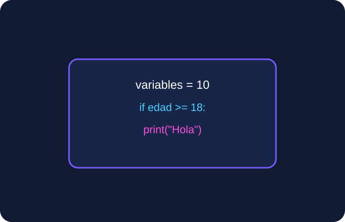
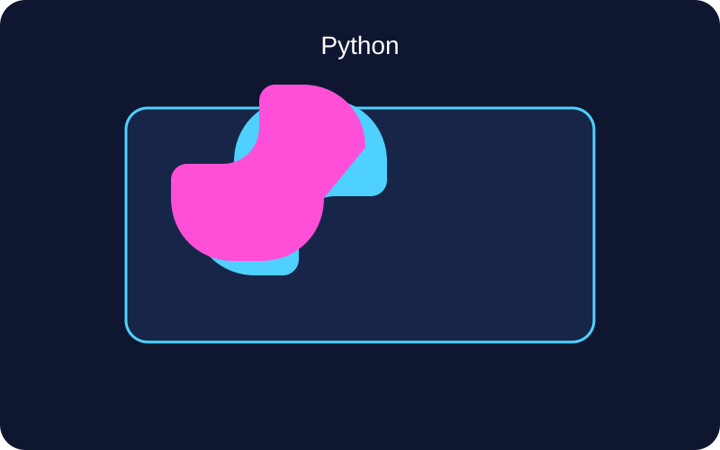
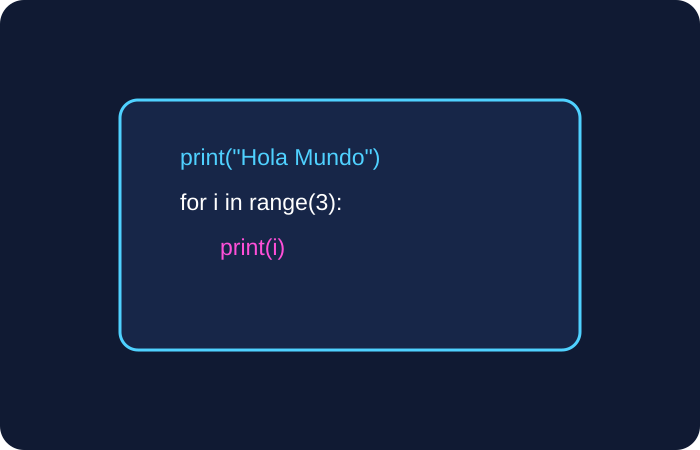
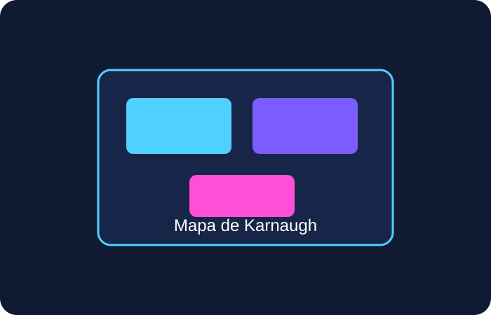
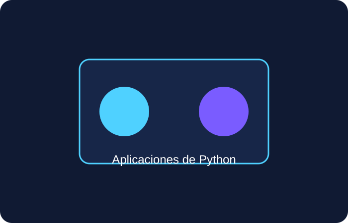
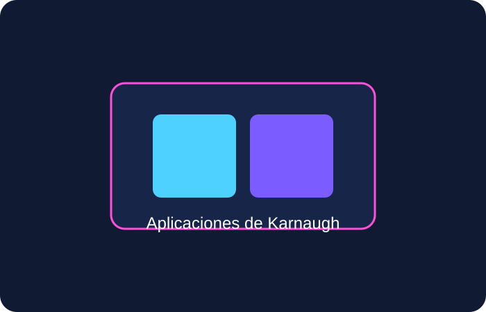

Variables y tipos de datos
Python permite trabajar con enteros, cadenas, booleanos y listas de forma sencilla.
Unidad 3
Python es un lenguaje sencillo y potente, mientras que el mapa de Karnaugh facilita la simplificación de funciones lógicas en electrónica e informática.


Python permite trabajar con enteros, cadenas, booleanos y listas de forma sencilla.
Se utilizan para realizar operaciones matemáticas, comparaciones y lógica.
Con input() y print() se capturan y muestran datos en consola.
if, elif y else permiten tomar decisiones según una condición.
Permiten repetir instrucciones un número determinado de veces.
Repiten una acción mientras la condición sea verdadera.
a = int(input("Ingrese a: "))
b = int(input("Ingrese b: "))
print("La suma es:", a + b)
n1 = 8 n2 = 9 n3 = 10 promedio = (n1 + n2 + n3) / 3 print(promedio)
num = int(input("Ingrese un número: "))
if num % 2 == 0:
print("Es par")
else:
print("Es impar")

Python destaca por su sintaxis legible, lo que facilita el aprendizaje y la escritura de programas.

El mapa de Karnaugh es una herramienta visual que permite simplificar funciones booleanas en lógica digital.
Reduce expresiones lógicas complejas y ayuda a diseñar circuitos más simples y eficientes.
Función booleana: F = A'B + AB Resultado simplificado: F = B

Se utiliza en desarrollo web, análisis de datos, automatización, inteligencia artificial y ciencia de datos.

Se emplea en diseño de circuitos digitales, sistemas lógicos y reducción de expresiones booleanas.